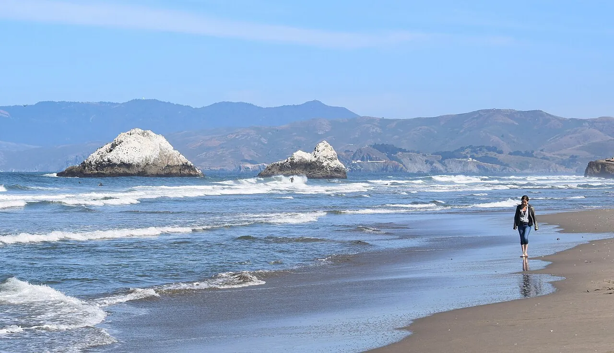

Ocean Beach
San Francisco, États-Unis · surf

La longue façade Pacifique de San Francisco. Une plage ouverte aux fortes houles, à aborder avec une solide expérience de l’océan.
- Lieu
- San Francisco, États-Unis
- Niveau
- Expert
- Activités
- surf
- Type d'eau
- Mer / océan
- Coordonnées
- 37.76, -122.51 (position approximative du secteur)
Ouvrir dans Ocean Buddy Télécharger sur l'App Store
Source : National Park Service.